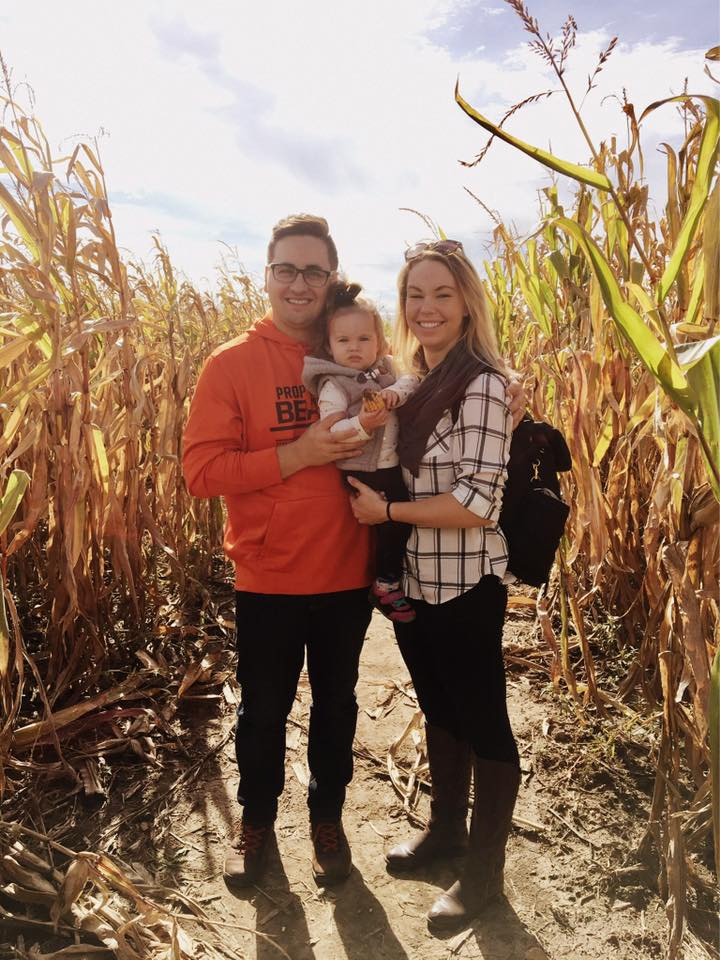

About me

My name is Ben Fleishman, I grew up in Vernon Hills IL. After high school I went to Kenall College to get a bachelors degree in Business management. During college I learned a lot of great life lessions and successfully graduated with a GPA of 3.2. After graduation I was hired by a company named Dialotech. At Dialogtech I started as a basic Support rep and in the four years since ive been there I moved from: Support specialist, Implementation Manger, Project Manager and now a Solutions Consultant. I am excited to continue my education and to learn front-end development as well as back-end devlopement.
My hobbies include playing music, bass guitar, and the Chicago bears. Ive been playing bass for the last 10 years and really enjoy playing in general. Its a good way to get ride of stress…. The stress the bears are giving me this season! I am still a die hard fan but it hurts me! I see promise in our new young QB.
Everything I do is for my family. My wife Jackie is my best friend, I know that sounds cliche but its true. She gets all my jokes and makes me laugh and puts up with my weirdness. She also gave me the best gift ever and thats my daughter Lily. Lily is my everything. Everything I do is for them and thats not gonna change ever.
Conntect With Me